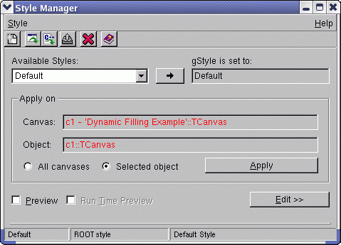
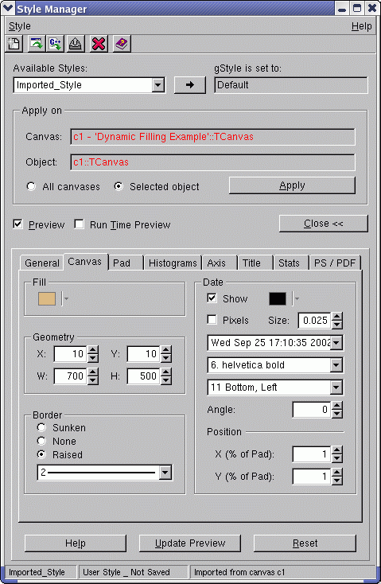

class TStyleManager: public TGMainFrame
TStyleManager This class provides a Graphical User Interface to manage styles in ROOT. It allows the user to edit styles, import / export them to macros, apply a style on the selected object or on all canvases, change gStyle. Activate the style manager by selecting Edit menu / Style... in the canvas window. The Style Manager interface is composed of two parts: - the top level interface that manages a list of styles; - the style editor, which deals with the current style settings./*  */
The combo box 'Available Styles' contains the list of available styles for the current ROOT session and shows the currently selected one. The field on the right shows the setting of the gStyle. You can set the global variable gStyle to the selected style by clicking on the button in the middle. The group frame 'Apply on' displays information for the currently selected canvas and object in the ROOT session. This selection might be changed by clicking on another object with the middle mouse button. You have a choice to apply a style on the selected object or on all available canvases. WARNING: You cannot undo the changes after applying the style! If you are not sure of that action, it may be better to see a preview of what you are going to apply. If the check button 'Preview' is selected, a preview of the selected canvas according to the selected style will be shown. The selection of the next check button 'Run Time Preview' will apply updates of the preview any time a value of the selected style is changed. For drawings that take a time it is better to disable this option. Create a new style: A new style can be created via the Style menu/New... or the toolbar. A clone of the selected style will be used as a base of the new style. All its values can be modified via the style editor later. The dialog that appears will ask for the name and description of the new style. Import a style (from a macro): A style macro can be imported at any time. The new imported style in the ROOT session will become the selected one. Import a style (from a canvas): You can do that selecting the Style menu/Import from.../Canvas or the corresponding Tool bar button. A new style will be created in the ROOT session and will become the selected one. This style is a clone of the gStyle with modified values as they are set in the currently selected canvas. You can import a style from any canvas and apply it later on some objects. Export a style (in a C++ macro file): To store a style longer than for the current ROOT session you can save it in a C++ macro file. This can be done via the menu or the tool bar button. There is a naming convention for the style macros: the name must be 'Style_*.C', where * can be replaced by anything you want. Delete a style: The selected style can be deleted from the list when you use the Style menu/Delete or the corresponding tool bar button. The selected style is removed from the list of all available styles for the current ROOT session. WARRNING: it will be lost if you didn't saved it in a C++ macro file before its deletion. Also, you cannot delete the selected style if it is set to gStyle. A message 'Can not delete gStyle' will be displayed on the CINT prompt./*  */
Editor's buttons: Open / close the style editor: The button 'Edit >>' opens the style editor and its label changes to 'Close <<'. For all details of what can be changed and how please see the provided Help. Reset a style (to a previously saved state): When the editor is opened, the 'Reset' button allows you to reset the values of the selected style for editing. Doing that you cancel all changes made since the last time you saved that style in a macro. If the selected style is one of the five ROOT styles (Plain, Bold, Video, Pub or Default), it will be recreated. Update the preview: The button 'Update Preview' is available when a preview is shown and the run time option is not selected. This button allows you to refresh the preview any time you want to see how the style you edit looks like. Help button: Provides a help of the currently selected tab.
Function Members (Methods)
public:
protected:
| static Int_t | TQObject::CheckConnectArgs(TQObject* sender, TClass* sender_class, const char* signal, TClass* receiver_class, const char* slot) |
| static Bool_t | TQObject::ConnectToClass(TQObject* sender, const char* signal, TClass* receiver_class, void* receiver, const char* slot) |
| static Bool_t | TQObject::ConnectToClass(const char* sender_class, const char* signal, TClass* receiver_class, void* receiver, const char* slot) |
| virtual void | TObject::DoError(int level, const char* location, const char* fmt, va_list va) const |
| virtual void | TGFrame::DoRedraw() |
| virtual void | TGFrame::Draw3dRectangle(UInt_t type, Int_t x, Int_t y, UInt_t w, UInt_t h) |
| static Time_t | TGFrame::GetLastClick() |
| TString | TGMainFrame::GetMWMfuncString() const |
| TString | TGMainFrame::GetMWMinpString() const |
| TString | TGMainFrame::GetMWMvalueString() const |
| TString | TGFrame::GetOptionString() const |
| const TGResourcePool* | TGFrame::GetResourcePool() const |
| virtual void* | TGFrame::GetSender() |
| virtual const char* | TQObject::GetSenderClassName() const |
| void | TObject::MakeZombie() |
| TGWindow& | TGWindow::operator=(const TGWindow& tgw) |
| virtual void | TGFrame::StartGuiBuilding(Bool_t on = kTRUE) |
private:
Data Members
public:
| enum TGMainFrame::[unnamed] { | kDontCallClose | |
| }; | ||
| enum TGFrame::[unnamed] { | kDeleteWindowCalled | |
| }; | ||
| enum TGWindow::EEditMode { | kEditEnable | |
| kEditDisable | ||
| kEditDisableEvents | ||
| kEditDisableGrab | ||
| kEditDisableLayout | ||
| kEditDisableResize | ||
| kEditDisableHeight | ||
| kEditDisableWidth | ||
| kEditDisableBtnEnable | ||
| kEditDisableKeyEnable | ||
| }; | ||
| enum TObject::EStatusBits { | kCanDelete | |
| kMustCleanup | ||
| kObjInCanvas | ||
| kIsReferenced | ||
| kHasUUID | ||
| kCannotPick | ||
| kNoContextMenu | ||
| kInvalidObject | ||
| }; | ||
| enum TObject::[unnamed] { | kIsOnHeap | |
| kNotDeleted | ||
| kZombie | ||
| kBitMask | ||
| kSingleKey | ||
| kOverwrite | ||
| kWriteDelete | ||
| }; |
protected:
private:
| Bool_t | fAllAndNotCurrent | =kTRUE when apply on 'All canvases' |
| TGRadioButton* | fApplyOnAll | 'Apply on' button group |
| TGTextButton* | fApplyOnButton | apply style on object(s) |
| TGHButtonGroup* | fApplyOnGroup | 'Apply on' button group |
| TGRadioButton* | fApplyOnSel | 'Apply on' button group |
| TGTextButton* | fApplyOnXYZ | axis apply on XYZ text button |
| TGComboBox* | fAttDateTextAlign | canvas date align combo box |
| TGNumberEntry* | fAttDateTextAngle | canvas date angle number entry |
| TGColorSelect* | fAttDateTextColor | canvas date color selection widget |
| TGFontTypeComboBox* | fAttDateTextFont | canvas date font combo box |
| TGNumberEntry* | fAttDateTextSize | canvas date size number entry |
| TGCheckButton* | fAttDateTextSizeInPixels | canvas date size check box |
| TGTab* | fAxisTab | axis' tabs |
| TGNumberEntry* | fBarOffset | histograms bar offset number entry |
| TGNumberEntry* | fBarWidth | histograms bar width number entry |
| TGButtonGroup* | fCanvasBorderMode | canvas border mode button group |
| TGLineWidthComboBox* | fCanvasBorderSize | canvas border size combo box |
| TGColorSelect* | fCanvasColor | canvas fill color selection widget |
| TGNumberEntry* | fCanvasDefH | canvas height number entry |
| TGNumberEntry* | fCanvasDefW | canvas width number entry |
| TGNumberEntry* | fCanvasDefX | canvas abscissa number entry |
| TGNumberEntry* | fCanvasDefY | canvas ordinate number entry |
| TGButtonGroup* | fColorModelPS | ps/pdf color model button group |
| TGRadioButton* | fColorModelPSCMYK | CMYB radio button |
| TGRadioButton* | fColorModelPSRGB | RGB radio button |
| TGFileInfo* | fCurMacro | current macro |
| TObject* | fCurObj | current object |
| TGLabel* | fCurObjLabel | label 'Object:' |
| TGTextEntry* | fCurObjTextEntry | label showing current object's name |
| TVirtualPad* | fCurPad | current pad |
| TGLabel* | fCurPadLabel | label 'Canvas:' |
| TGTextEntry* | fCurPadTextEntry | label showing current pad's name |
| TStyle* | fCurSelStyle | current selected style |
| TGLabel* | fCurStylabel | label 'gStyle is set to:' |
| TGTextEntry* | fCurStyle | label showing gStyle's name |
| Int_t | fCurTabAxisNum | current opened axis tab number |
| Int_t | fCurTabNum | current opened tab number |
| TGNumberEntry* | fDateX | canvas date abscissa number entry |
| TGNumberEntry* | fDateY | canvas date ordinate number entry |
| TGCheckButton* | fDrawBorder | function border show/hide check box |
| TGHorizontalFrame* | fEditionButtonFrame | editor's buttons |
| TGVerticalFrame* | fEditionFrame | editor |
| TGTextButton* | fEditionHelp | help button |
| TGTextButton* | fEditionReset | reset button |
| TGTab* | fEditionTab | editor's tabs |
| TGTextButton* | fEditionUpdatePreview | update preview button |
| TGNumberEntry* | fEndErrorSize | end error size number entry |
| TGNumberEntry* | fErrorX | error along abscissa number entry |
| TGColorSelect* | fFillColor | general fill color selection widget |
| TGedPatternSelect* | fFillStyle | general fill pattern selection widget |
| TGTextEntry* | fFitFormat | fit format text entry |
| TGLabel* | fFitFormatLabel | label 'fit format' |
| TGButtonGroup* | fFrameBorderMode | frame border mode button group |
| TGLineWidthComboBox* | fFrameBorderSize | frame border size combo box |
| TGColorSelect* | fFrameFillColor | frame fill color selection widget |
| TGedPatternSelect* | fFrameFillStyle | frame fill pattern selection widget |
| TGColorSelect* | fFrameLineColor | frame line color selection widget |
| TGLineStyleComboBox* | fFrameLineStyle | frame line style combo box |
| TGLineWidthComboBox* | fFrameLineWidth | frame line width combo box |
| TGColorSelect* | fFuncColor | function color selection widget |
| TGLineStyleComboBox* | fFuncStyle | function line style combo box |
| TGLineWidthComboBox* | fFuncWidth | function width number entry |
| TGColorSelect* | fGridColor | pad grid line color selection widget |
| TGLineStyleComboBox* | fGridStyle | pad grid line style combo box |
| TGLineWidthComboBox* | fGridWidth | pad grid line width combo box |
| TGLineWidthComboBox* | fHatchesLineWidth | general hatches width combo box |
| TGNumberEntry* | fHatchesSpacing | general hatches spacing number entry |
| TGTextEntry* | fHeaderPS | ps/pdf header text entry |
| TGColorSelect* | fHistFillColor | histograms fill color selection widget |
| TGedPatternSelect* | fHistFillStyle | histograms fill pattern selection widget |
| TGColorSelect* | fHistLineColor | histograms fill color selection widget |
| TGLineStyleComboBox* | fHistLineStyle | histograms line style combo box |
| TGLineWidthComboBox* | fHistLineWidth | histograms line width combo box |
| TGCheckButton* | fHistMinimumZero | histograms minimum zero check box |
| TGTab* | fHistosTab | histos' tabs |
| TGHorizontal3DLine* | fHorizontal3DLine | a line under the tool bar |
| TGPopupMenu* | fImportCascade | Cascaded menu 'Import' |
| Bool_t | fLastChoice | =kTRUE if the user choose OK in the last TStyleDialog |
| TGLayoutHints* | fLayoutExpandX | often used layout |
| TGLayoutHints* | fLayoutExpandXCenterYMargin | often used layout |
| TGLayoutHints* | fLayoutExpandXMargin | often used layout |
| TGLayoutHints* | fLayoutExpandXY | often used layout |
| TGLayoutHints* | fLayoutExpandXYMargin | often used layout |
| TGLineWidthComboBox* | fLegendBorderSize | legend border size combo box |
| TGLabel* | fLegendBorderSizeLabel | label 'Legend's' |
| TGNumberEntry* | fLegoInnerR | histograms lego inner radius number entry |
| TGColorSelect* | fLineColor | general line color selection widget |
| TGNumberEntry* | fLineScalePS | ps/pdf line scale number entry |
| TGLineStyleComboBox* | fLineStyle | general line style combo box |
| TGTextButton* | fLineStyleEdit | general line style editor open button |
| TGLineWidthComboBox* | fLineWidth | general line width combo box |
| TGComboBox* | fListComboBox | list of available styles |
| TGLabel* | fListLabel | label 'Available Styles:' |
| TGPictureButton* | fMakeDefault | selected style becom gStyle |
| const TGPicture* | fMakeDefaultPic | button picture |
| TGColorSelect* | fMarkerColor | general marker color selection widget |
| TGComboBox* | fMarkerSize | general marker size combo box |
| TGedMarkerSelect* | fMarkerStyle | general marker style entry |
| TGMenuBar* | fMenuBar | the main window menu bar |
| TGPopupMenu* | fMenuHelp | the 'Help' popup menu |
| TGPopupMenu* | fMenuStyle | the 'Style' popup menu |
| Bool_t | fMoreAndNotLess | =kTRUE when editor is open |
| TGTextButton* | fMoreLess | open/close the editor |
| TGNumberEntry* | fNumberContours | histograms number of contours number entry |
| TGCheckButton* | fOptDateBool | canvas date show/hide check box |
| TGComboBox* | fOptDateFormat | canvas date format text entry |
| TGCheckButton* | fOptFitChi | fit Chi show/hide check box |
| TGCheckButton* | fOptFitErrors | fit errors check box |
| TGCheckButton* | fOptFitProbability | fit probability show/hide check box |
| TGCheckButton* | fOptFitValues | fit values show/hide check box |
| TGCheckButton* | fOptLogx | X axis logarithmic scale check box |
| TGCheckButton* | fOptLogy | Y axis logarithmic scale check box |
| TGCheckButton* | fOptLogz | Z axis logarithmic scale check box |
| TGCheckButton* | fOptStatEntries | stats entries show/hide check box |
| TGCheckButton* | fOptStatErrors | stats errors check box |
| TGCheckButton* | fOptStatIntegral | stats integral show/hide check box |
| TGCheckButton* | fOptStatKurtosis | stats kurtosis show/hide check box |
| TGCheckButton* | fOptStatMean | stats mean show/hide check box |
| TGCheckButton* | fOptStatName | stats name show/hide check box |
| TGCheckButton* | fOptStatOverflow | stats overflow show/hide check box |
| TGCheckButton* | fOptStatRMS | stats RMS show/hide check box |
| TGCheckButton* | fOptStatSkewness | stats Skewness show/hide check box |
| TGCheckButton* | fOptStatUnderflow | stats underflow show/hide check box |
| TGCheckButton* | fOptTitle | title show/hide check box |
| TGButtonGroup* | fPadBorderMode | pad border mode button group |
| TGLineWidthComboBox* | fPadBorderSize | pad border size combo box |
| TGNumberEntry* | fPadBottomMargin | pad bottom margin number entry |
| TGColorSelect* | fPadColor | pad fill color selection widget |
| TGCheckButton* | fPadGridX | pad grid along X show/hide check box |
| TGCheckButton* | fPadGridY | pad grid along Y show/hide check box |
| TGNumberEntry* | fPadLeftMargin | pad left margin number entry |
| TGNumberEntry* | fPadRightMargin | pad right margin number entry |
| TGCheckButton* | fPadTickX | pad ticks along X show/hide check box |
| TGCheckButton* | fPadTickY | pad ticks along Y show/hide check box |
| TGNumberEntry* | fPadTopMargin | pad top margin number entry |
| TGTextEntry* | fPaintTextFormat | histograms format text entry |
| TGTextButton* | fPaletteEdit | palette editor open button |
| Bool_t | fPaperSizeEnCm | =kTRUE if the paper size is in cm |
| TGComboBox* | fPaperSizePredef | ps/pdf paper size combo box |
| TGNumberEntry* | fPaperSizeX | ps/pdf paper size width number entry |
| TGNumberEntry* | fPaperSizeY | ps/pdf paper size height number entry |
| TGCheckButton* | fPreviewButton | if checked, preview is visible |
| TGCheckButton* | fPreviewRealTime | if checked, real time preview |
| TStylePreview* | fPreviewWindow | preview |
| Bool_t | fRealTimePreview | =kTRUE if auto refreshed preview |
| UInt_t | fSMHeight | style manager's height |
| UInt_t | fSMWidth | style manager's width |
| TGNumberEntry* | fScreenFactor | general screen factor number entry |
| Bool_t | fSigSlotConnected | =kTRUE when signal/slots connected |
| TGLineWidthComboBox* | fStatBorderSize | stats border size combo box |
| TGLabel* | fStatBorderSizeLabel | label 'stats' shadow |
| TGColorSelect* | fStatColor | stats fill color selection widget |
| TGFontTypeComboBox* | fStatFont | stats font type combo box |
| TGNumberEntry* | fStatFontSize | stats font size number entry |
| TGCheckButton* | fStatFontSizeInPixels | stats font size check box |
| TGTextEntry* | fStatFormat | stats format text entry |
| TGLabel* | fStatFormatLabel | label 'stats format' |
| TGNumberEntry* | fStatH | stats height number entry |
| TGedPatternSelect* | fStatStyle | stats fill pattern selection widget |
| TGColorSelect* | fStatTextColor | stats text color selection widget |
| TGNumberEntry* | fStatW | stats width number entry |
| TGNumberEntry* | fStatX | stats abscissa number entry |
| TGNumberEntry* | fStatY | stats ordinate number entry |
| TGStatusBar* | fStatusBar | status bar |
| TGCheckButton* | fStripDecimals | axis label's decimal part show/hide check box |
| Bool_t | fStyleChanged | =kTRUE if the style has been modified |
| TGComboBox* | fTextAlign | general text align combo box |
| TGNumberEntry* | fTextAngle | general text angle number entry |
| TGColorSelect* | fTextColor | general text color selection widget |
| TGFontTypeComboBox* | fTextFont | general text font combo box |
| TGNumberEntry* | fTextSize | general text size number entry |
| TGCheckButton* | fTextSizeInPixels | general text size check box |
| TGNumberEntry* | fTimeOffsetDate | axis time offset (mm/dd/yyyy) number entry |
| TGNumberEntry* | fTimeOffsetTime | axis time offset (hh:mm:ss) number entry |
| TGComboBox* | fTitleAlign | title align combo box |
| TGLineWidthComboBox* | fTitleBorderSize | title border size combo box |
| TGLabel* | fTitleBorderSizeLabel | label 'Title's' |
| TGColorSelect* | fTitleColor | title fill color selection widget |
| TGFontTypeComboBox* | fTitleFont | title font combo box |
| TGNumberEntry* | fTitleFontSize | title font size number entry |
| TGCheckButton* | fTitleFontSizeInPixels | title font size check box |
| TGNumberEntry* | fTitleH | title height number entry |
| TGTextEntry* | fTitlePS | ps/pdf title text entry |
| TGedPatternSelect* | fTitleStyle | title fill pattern selection widget |
| TGColorSelect* | fTitleTextColor | title text color selection widget |
| TGNumberEntry* | fTitleW | title width number entry |
| TGNumberEntry* | fTitleX | title abscissa number entry |
| TGNumberEntry* | fTitleY | title ordinate number entry |
| TGToolBar* | fToolBar | the tool bar |
| TGPictureButton* | fToolBarDelete | tool bar 'Delete' button |
| const TGPicture* | fToolBarDeletePic | tool bar 'Delete' picture |
| TGPictureButton* | fToolBarExport | tool bar 'Export' button |
| const TGPicture* | fToolBarExportPic | tool bar 'Export' picture |
| TGPictureButton* | fToolBarHelp | tool bar 'Help' button |
| const TGPicture* | fToolBarHelpPic | tool bar 'Help' picture |
| TGPictureButton* | fToolBarImportCanvas | tool bar 'Import from canvas' button |
| const TGPicture* | fToolBarImportCanvasPic | tool bar 'Import from canvas' picture |
| TGPictureButton* | fToolBarImportMacro | tool bar 'Import from macro' button |
| const TGPicture* | fToolBarImportMacroPic | tool bar 'Import from macro' picture |
| TGPictureButton* | fToolBarNew | tool bar 'New' button |
| const TGPicture* | fToolBarNewPic | tool bar 'New' picture |
| TList* | fTrashListFrame | to avoid memory leak |
| TList* | fTrashListLayout | to avoid memory leak |
| TGColorSelect* | fXAxisColor | X axis color selection widget |
| TGColorSelect* | fXLabelColor | X axis label color selection widget |
| TGFontTypeComboBox* | fXLabelFont | X axis label font combo box |
| TGNumberEntry* | fXLabelOffset | X axis label offset number entry |
| TGNumberEntry* | fXLabelSize | X axis label size number entry |
| TGCheckButton* | fXLabelSizeInPixels | X axis label size check box |
| TGNumberEntry* | fXNdivMain | X axis primary division number entry |
| TGNumberEntry* | fXNdivSub | X axis secondary division number entry |
| TGNumberEntry* | fXNdivSubSub | X axis tertiary division number entry |
| TGCheckButton* | fXNdivisionsOptimize | X axis division optimization check box |
| TGNumberEntry* | fXTickLength | X axis tick length number entry |
| TGColorSelect* | fXTitleColor | X axis title color selection widget |
| TGFontTypeComboBox* | fXTitleFont | X axis title font combo box |
| TGNumberEntry* | fXTitleOffset | X axis title offset number entry |
| TGNumberEntry* | fXTitleSize | X axis title size number entry |
| TGCheckButton* | fXTitleSizeInPixels | X axis title size check box |
| TGColorSelect* | fYAxisColor | Y axis color selection widget |
| TGColorSelect* | fYLabelColor | Y axis label color selection widget |
| TGFontTypeComboBox* | fYLabelFont | Y axis label font combo box |
| TGNumberEntry* | fYLabelOffset | Y axis label offset number entry |
| TGNumberEntry* | fYLabelSize | Y axis label size number entry |
| TGCheckButton* | fYLabelSizeInPixels | Y axis label size check box |
| TGNumberEntry* | fYNdivMain | Y axis primary division number entry |
| TGNumberEntry* | fYNdivSub | Y axis secondary division number entry |
| TGNumberEntry* | fYNdivSubSub | Y axis tertiary division number entry |
| TGCheckButton* | fYNdivisionsOptimize | Y axis division optimization check box |
| TGNumberEntry* | fYTickLength | Y axis tick length number entry |
| TGColorSelect* | fYTitleColor | Y axis title color selection widget |
| TGFontTypeComboBox* | fYTitleFont | Y axis title font combo box |
| TGNumberEntry* | fYTitleOffset | Y axis title offset number entry |
| TGNumberEntry* | fYTitleSize | Y axis title size number entry |
| TGCheckButton* | fYTitleSizeInPixels | Y axis title size check box |
| TGColorSelect* | fZAxisColor | Z axis color selection widget |
| TGColorSelect* | fZLabelColor | Z axis label color selection widget |
| TGFontTypeComboBox* | fZLabelFont | Z axis label font combo box |
| TGNumberEntry* | fZLabelOffset | Z axis label offset number entry |
| TGNumberEntry* | fZLabelSize | Z axis label size number entry |
| TGCheckButton* | fZLabelSizeInPixels | Z axis label size check box |
| TGNumberEntry* | fZNdivMain | Z axis primary division number entry |
| TGNumberEntry* | fZNdivSub | Z axis secondary division number entry |
| TGNumberEntry* | fZNdivSubSub | Z axis tertiary division number entry |
| TGCheckButton* | fZNdivisionsOptimize | Z axis division optimization check box |
| TGNumberEntry* | fZTickLength | Z axis tick length number entry |
| TGColorSelect* | fZTitleColor | Z axis title color selection widget |
| TGFontTypeComboBox* | fZTitleFont | Z axis title font combo box |
| TGNumberEntry* | fZTitleOffset | Z axis title offset number entry |
| TGNumberEntry* | fZTitleSize | Z axis title size number entry |
| TGCheckButton* | fZTitleSizeInPixels | Z axis title size check box |
| static TStyleManager* | fgStyleManager | singleton style manager |
Class Charts
{kind=link}
{kind=link}
{kind=link}
{kind=link}
Function documentation
void Terminate()
Called to delete the style manager. Called when the ROOT session is closed via a canvas' menu.
void DoDelete()
void DoExport()
Save the current selected style in a C++ macro file. Called via the menu or the tool bar.
void DoImportCanvas()
Create a new style (a copy of gStyle) and import the properties of the current canvas inside.
void AddTopLevelInterface(TGCompositeFrame* cf)
Add the top level interface to the frame 'cf'. This part of the interface will provide all enable functionalities, excluding the edition of styles.
void BuildList(TStyle* style = 0)
Build the list of styles which will appear in the available styles combo box. The new style to select is mentioned. If no style has been specified, the last entry of the list is selected.
void UpdateStatusBar()
Update the content of the status bar: show the name of the current selected style, its title and the macro from which it has been imported.
void UpdateEditor(Int_t tabNum)
Update the values of every widget entry in the editor. The new values are loaded from the current selected style.
void DisconnectEditor(Int_t tabNum)
Disconnect every widget entry of the editor from its slot. Must be called before UpdateEditor() to avoid recursive calls.
void DoEditor()
Called each time something is changed in the style editor. Thanks to this method, we can know if the style differs from the original style.
void AddEdition(TGCompositeFrame* p)
Add the editor to the frame 'p'. It contains the tabs allowing the user to modify every data member of the current TStyle object.
void AddHistosHistosFill(TGCompositeFrame* f)
Add the 'Fill' group frame to the 'Histos - Histos' tab.
void AddHistosHistosLine(TGCompositeFrame* f)
Add the 'Line' group frame to the 'Histos - Histos' tab.
void AddHistosHistosBar(TGCompositeFrame* f)
Add the 'Bar' group frame to the 'Histos - Histos' tab.
void AddHistosHistosContours(TGCompositeFrame* f)
Add the 'Contours' group frame to the 'Histos - Histos' tab.
void AddHistosHistosAxis(TGCompositeFrame* f)
Add the 'Axis' group frame to the 'Histos - Histos' tab.
void AddHistosHistosLegoInnerR(TGCompositeFrame* f)
Add the '3D Cylindrical' group frame to the 'Histos - Histos' tab.
void AddHistosFramesFill(TGCompositeFrame* f)
Add the 'Fill' group frame to the 'Histos - Frames' tab.
void AddHistosFramesLine(TGCompositeFrame* f)
Add the 'Line' group frame to the 'Histos - Frames' tab.
void AddHistosFramesBorder(TGCompositeFrame* f)
Add the 'Border' group frame to the 'Histos - Frames' tab.
void AddHistosGraphsLine(TGCompositeFrame* f)
Add the 'Line' group frame to the 'Histos - Graphs' tab.
void AddHistosGraphsBorder(TGCompositeFrame* f)
Add the 'Draw Border' check button to the 'Histos - Graphs' tab.
void AddHistosGraphsErrors(TGCompositeFrame* f)
Add the 'Errors' group frame to the 'Histos - Graphs' tab.
void AddAxisXDivisions(TGCompositeFrame* f)
Add the 'Divisions' group frame to the 'Axis - X Axis' tab.
void AddAxisYDivisions(TGCompositeFrame* f)
Add the 'Divisions' group frame to the 'Axis - Y Axis' tab.
void AddAxisZDivisions(TGCompositeFrame* f)
Add the 'Divisions' group frame to the 'Axis - Z Axis' tab.
void AddPsPdfColorModel(TGCompositeFrame* f)
Add the 'Color Model' group frame to the 'PS / PDF' tab.
void AddPsPdfLineScale(TGCompositeFrame* f)
Add the 'Line scale' number entry to the 'PS / PDF' tab.
TGedPatternSelect * AddFillStyleEntry(TGCompositeFrame* f, Int_t id)
Add a fill style entry to the frame f.
TGedMarkerSelect * AddMarkerStyleEntry(TGCompositeFrame* f, Int_t id)
Add a marker style entry to the frame f.
TGComboBox * AddMarkerSizeEntry(TGCompositeFrame* f, Int_t id)
Add a marker size entry to the frame f.
TGNumberEntry * AddNumberEntry(TGCompositeFrame* f, Int_t e1, Int_t e2, Int_t e3, Int_t id, const char* s, Double_t init, Int_t digits, TGNumberFormat::EStyle nfS, TGNumberFormat::EAttribute nfA, TGNumberFormat::ELimit nfL, Double_t min, Double_t max)
Add a number entry to the frame f. A caption can be added.
TGLineWidthComboBox * AddLineWidthEntry(TGCompositeFrame* f, Int_t id)
Add a line width entry to the frame f.
TGLineStyleComboBox * AddLineStyleEntry(TGCompositeFrame* f, Int_t id)
Add a line style entry to the frame f.
TGTextButton * AddTextButton(TGCompositeFrame* f, const char* s, Int_t id)
Add a text button to the frame f.
TGFontTypeComboBox * AddFontTypeEntry(TGCompositeFrame* f, Int_t id)
Add a font type combo box to the frame f.
TGComboBox * AddTextAlignEntry(TGCompositeFrame* f, Int_t id)
Add a text align combo box to the frame f.
TGButtonGroup * AddBorderModeEntry(TGCompositeFrame* f, Int_t id1, Int_t id2, Int_t id3)
Add a border mode button group to the frame f.
TGComboBox * AddDateFormatEntry(TGCompositeFrame* f, Int_t id)
Add a date format combo box to the frame f.
TGCheckButton * AddCheckButton(TGCompositeFrame* f, const char* s, Int_t id, Int_t e1 = 0, Int_t e2 = 2)
Add a check button to the frame f.
TGTextEntry * AddTextEntry(TGCompositeFrame* f, const char* s, Int_t id)
Add a text entry to the frame f. A caption can be added.
TGComboBox * AddPaperSizeEntry(TGCompositeFrame* f, Int_t id)
Add a prefered paper size combo box to the frame f.
void DoImportMacro(Bool_t create)
Slot called to import a style from a C++ macro file. If create=kTRUE, a new style is created. Otherwise, the current style is reseted.
void DoListSelect()
Slot called when the user select an item in the available styles' list. Update the preview, the editor, the status bar. The current selected style is changed.
void DoRealTime(Bool_t b)
Slot called when the user click on the run time update check button. If b=kTRUE, the user asks for a real time preview.
void DoPreview(Bool_t b)
Slot called when the user click on the preview check button. If b=kTRUE, the user asks for a preview, otherwise he wants to close it.
void DoPreviewClosed()
Slot called to close the preview, via the preview check button, or when the preview window is closed via the window manager.
void DoMakeDefault()
Slot called to make the current selected style (in the ComboBox) become gStyle.
void DoApplyOnSelect(Int_t i)
Slot called to choose on which object(s) the 'Apply' button will have an effect.
void DoApplyOn()
Slot called when the user clicks on the 'Apply' button. Apply the current selected style to the specified object(s)
void DoMoreLess()
Slot called when the user try to show or hide the editor part of the style manager.
void DoSelectNoCanvas()
void DoSelectCanvas(TVirtualPad* pad, TObject* obj, Int_t mouseButton)
void ModAttDateTextSizeInPixels(Bool_t b)
Slot called whenever the date text size mode is modified by the user.
void ModHistMinimumZero()
Slot called whenever the histos minimum zero boolean is modified by the user.
void ModApplyOnXYZ()
Slot called whenever the apply on XYZ button is clicked. The settings of the current selected axis pad are applyed on all axis. NB: The logarithmic scale option isn't modified by this method.
void ModXTitleSizeInPixels(Bool_t b)
Slot called whenever the X axis title size mode is modified by the user.
void ModXLabelSizeInPixels(Bool_t b)
Slot called whenever the X axis label size mode is modified by the user.
void ModYTitleSizeInPixels(Bool_t b)
Slot called whenever the Y axis title size mode is modified by the user.
void ModYLabelSizeInPixels(Bool_t b)
Slot called whenever the Y axis label size mode is modified by the user.
void ModZTitleSizeInPixels(Bool_t b)
Slot called whenever the Z axis title size mode is modified by the user.
void ModZLabelSizeInPixels(Bool_t b)
Slot called whenever the Z axis Label size mode is modified by the user.
void ModTitleFontSizeInPixels(Bool_t b)
Slot called whenever the text size mode is modified by the user.
void ModStatStyle(Style_t pattern)
Slot called whenever the stats fill style is modified by the user.
void ModStatTextColor(Pixel_t color)
Slot called whenever the stats text color is modified by the user.
void ModStatFontSizeInPixels(Bool_t b)
Slot called whenever the text size mode is modified by the user.
void ModStatFormat(const char* sformat)
Slot called whenever the stats paint format is modified by the user.
void ModFitFormat(const char* fitformat)
Slot called whenever the fit paint format is modified by the user.